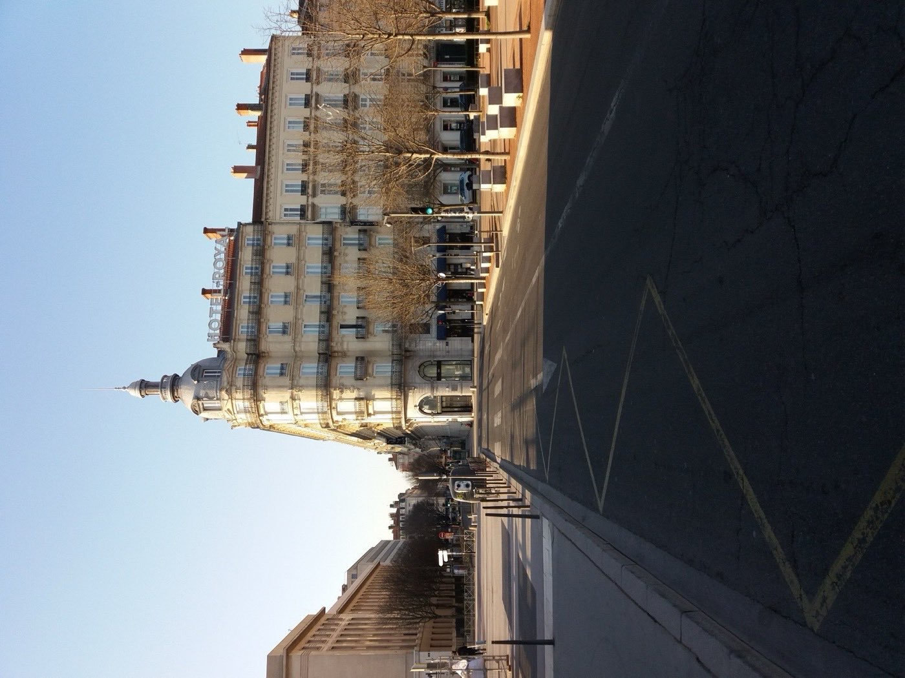
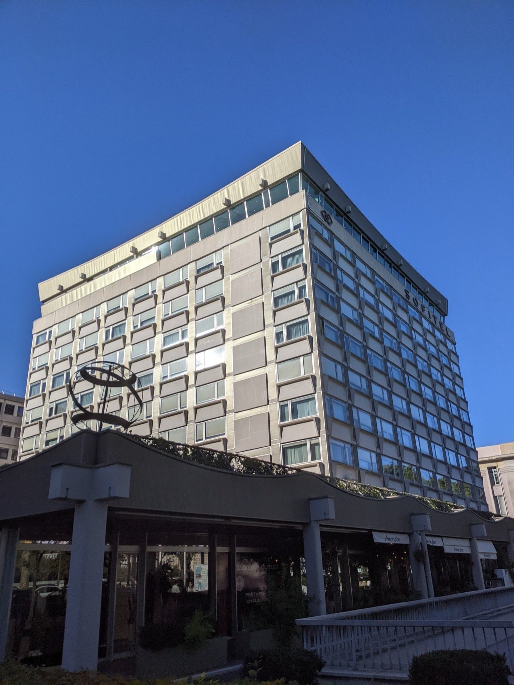

Les meilleurs hôtels de Lyon : du boutique-hôtel au palace
Capitale française de la gastronomie, Lyon a longtemps eu une hôtellerie en dessous de sa
table. Ce n'est plus vrai. Huit adresses testées, notées, et mesurées à un critère que
personne d'autre n'applique : ce que l'hôtel fait réellement de la cuisine lyonnaise.
Par Lucas Lecoq, rédacteur en chef✺Publié le 21 juillet 2026✺17 min de lecture
La vue depuis la terrasse de la Villa Florentine, sur la colline de Fourvière :
les toits du Vieux-Lyon et la cathédrale Saint-Jean. Photo : Guilhem Vellut, CC BY 2.0.
TL;DR : l'essentielLe podium lyonnais 2026
Villa Florentine (Fourvière), 9,3/10 :
Relais & Châteaux rouvert en avril 2026, vue UNESCO, restaurant gastronomique intégré.
Meilleur indice gastronomique du palmarès (4,8/5).
Cour des Loges (Vieux-Lyon), 9,0/10 :
quatre hôtels particuliers Renaissance, restaurant étoilé Les Loges.
Le Royal Lyon MGallery (Presqu'île), 8,5/10 :
le seul 5 étoiles sur la place Bellecour. L'emplacement le plus efficace de Lyon.
La surprise : le Fourvière Hotel
(8,2/10), un 4 étoiles installé dans un ancien couvent, qui
décroche 4,6/5 à l'indice gastronomique (devant deux 5 étoiles) grâce à
son bouchon intégré. Dès 108 €/nuit en basse saison, c'est le meilleur rapport
gastronomie/prix du classement. Et un hors-les-murs : le
Château de Bagnols (8,8/10), à 30 minutes dans le
Beaujolais, que nous classons à part parce qu'il n'est pas à Lyon.
La grille LMHS Destination et l'indice gastronomique
Ce palmarès applique la grille LMHS Destination, la déclinaison du Protocole LMHS réservée à nos classements par ville ou par région. Elle note sur 10 et pondère cinq critères : rapport qualité-prix (25 %), un critère thématique qui s'adapte à l'objet du classement (25 %, ici l'ancrage gastronomique), la localisation (20 %), le service (20 %) et les avis clients vérifiés (10 %). C'est la grille déjà utilisée pour nos hôtels de charme sur la Côte d'Azur et nos hôtels de charme en Provence.
À Lyon, le critère thématique s'impose de lui-même. Nous avons donc construit l'indice gastronomique LMHS, noté sur 5, qui mesure l'intégration réelle de la culture culinaire lyonnaise dans l'expérience hôtelière, sur six marqueurs : restaurant étoilé ou bouchon intégré, chef ancré dans la région, carte des vins Beaujolais et Côtes du Rhône, petit-déjeuner de producteurs locaux, accès organisé aux marchés, cours de cuisine. Un bon hôtel qui se contente d'être à cinq minutes des bouchons ne dépasse pas 3,5/5. Un hôtel qui fait vivre la cuisine lyonnaise chez lui monte à 4,5 et au-delà.
C'est ce critère qui explique les surprises de ce classement : le Fourvière Hotel, 4 étoiles, devance à l'indice gastronomique le Royal et le Sofitel, tous deux 5 étoiles.
Bagnols : pourquoi 8,8/10 ici, et 14,7/20 dans notre palmarès des spas
Le Château de Bagnols figure déjà sur ce site, dans notre sélection des hôtels avec spa privatif, avec une note nettement moins flatteuse : 14,7/20, et un verdict sévère sur son spa privatisable en sous-sol, jugé daté pour 450 €/nuit. Les deux notes ne se contredisent pas : elles ne mesurent pas la même chose. Le Protocole LMHS classique, sur 20, pèse quatre piliers égaux dont le Soin, c'est-à-dire le spa, précisément le point faible de Bagnols. La grille Destination appliquée ici ne note pas le spa : elle note l'ancrage gastronomique, où le restaurant étoilé Le 1217 et la cave beaujolaise placent le château très haut. Venez à Bagnols pour la table et le cadre, pas pour le spa.
Le tableau : scores, prix et indice gastronomique
Rang
Hôtel
Quartier
Cat.
Score LMHS
Indice gastro.
Basse saison
Haute saison
01
Villa Florentine
Fourvière
5★ R&C
9,3/10
4,8/5
203 €
502 €
02
Cour des Loges
Vieux-Lyon
5★
9,0/10
4,5/5
210 €
364 €
03
Le Royal Lyon MGallery
Presqu'île
5★
8,5/10
3,8/5
138 €
278 €
04
Fourvière Hotel
Fourvière
4★
8,2/10
4,6/5
108 €
310 €
05
Carlton Lyon MGallery
Presqu'île
4★
8,0/10
3,5/5
165 €
420 €
06
Sofitel Lyon Bellecour
Presqu'île
5★
7,5/10
3,2/5
121 €
329 €
07
Collège Hotel
Vieux-Lyon
4★
7,0/10
3,0/5
84 €
230 €
✺
Château de Bagnols hors les murs
Beaujolais
5★ R&C
8,8/10
4,7/5
450 €
780 €
Prix indicatifs chambre d'entrée de gamme par nuit, taxes non incluses.
Indice gastronomique LMHS = ancrage culinaire lyonnais sur 5 (restaurant étoilé ou bouchon
intégré, chef régional, carte des vins Beaujolais et Côtes du Rhône, petit-déjeuner de
producteurs locaux, accès marchés, cours de cuisine). Le Château de Bagnols est classé à part :
il est à 30 minutes de Lyon, dans le Beaujolais.
Sources : sites officiels, Booking.com, TripAdvisor, relevés en juillet 2026.
Notre sélection : les meilleurs hôtels de Lyon
01
Villa Florentine, Fourvière 9,3/10
Pour qui : couples en escapade romantique, amateurs de gastronomie lyonnaise, voyageurs qui veulent le meilleur de Lyon en un seul endroit.
C'est l'adresse qui manquait à Lyon. Perchée sur la colline de Fourvière, avec une vue directe sur le site UNESCO et les toits de la Presqu'île, la Villa Florentine a rouvert le 30 avril 2026 après quatre mois de travaux : 36 chambres et suites repensées (de 23 m² à 128 m² pour les suites terrasse), un décor qui marie Renaissance lyonnaise et contemporain épuré, une piscine qui surplombe la ville. Ce qu'on retient surtout, c'est La Table de la Villa Florentine, le restaurant gastronomique intégré, qui travaille les produits du terroir lyonnais avec une carte Côtes du Rhône et Beaujolais soigneusement bâtie. Le petit-déjeuner, noté 9,1/10 par les clients, fait la part belle aux producteurs locaux. C'est exactement ce que mesure notre indice gastronomique, et la Villa Florentine le remporte haut la main. Membre Relais & Châteaux.
Le bémol LMHS : quelques avis post-réouverture signalent des finitions inégales dans certaines chambres, la rénovation est fraîche, le rodage n'est pas terminé. La piscine, dont l'entretien était déjà critiqué avant les travaux, reste à surveiller. Et l'accès en voiture depuis le centre décourage ceux qui ne veulent pas conduire.
Fourvière, 5e arr. · 36 chambres · Dès 203 €/nuit en basse saison · De 359 € à 502 € en haute saison ·
Indice gastronomique 4,8/5 ·
Site officiel →
02
Cour des Loges, Vieux-Lyon 9,0/10
Pour qui : amateurs d'architecture historique, gastronomes, voyageurs qui veulent dormir dans un monument vivant.
Quatre hôtels particuliers Renaissance réunis autour d'une cour intérieure à verrière, rue du Bœuf. La Cour des Loges est l'hôtel le plus cinématographique de Lyon, les traboules commencent littéralement dans le hall. 61 chambres toutes différentes (mezzanine, classique, suites appartement), chacune avec ses poutres apparentes ou ses voûtes en pierre. Côté table, Les Loges, le restaurant étoilé au Guide Michelin dirigé par le chef Anthony Bonnet depuis 2012, propose une cuisine gastronomique légère et sans frontière ; le bistrot Le Comptoir complète l'offre pour les repas décontractés. La carte des vins, très solide en Côtes du Rhône, fait honneur à la région. Membre Radisson Collection.
Le bémol LMHS : le rapport qualité-prix est le point faible identifié par les clients (3,9/5 sur TripAdvisor). Le parking est un calvaire dans ce quartier pavé, comptez 49 €/nuit de voiturier. Et l'accès en valises à roulettes sur les pavés du Vieux-Lyon reste sportif.
Rue du Bœuf, 5e arr. · 61 chambres · Dès 210 €/nuit en basse saison · De 227 € à 364 € en haute saison ·
Indice gastronomique 4,5/5 ·
Site officiel →
03

Hôtel Le Royal Lyon MGallery, Presqu'île 8,5/10
Pour qui : couples, voyageurs d'affaires, touristes qui veulent être au cœur de Lyon et tout faire à pied.
L'adresse la mieux placée de Lyon, sans discussion : seul 5 étoiles directement sur la place Bellecour, avec vue sur Fourvière et le Vieux-Lyon. Le Royal revendique une identité de « maison lyonnaise », décor Belle Époque, classicisme haussmannien, service impeccable. 72 chambres dont 10 suites, certaines avec vue panoramique sur la plus grande place piétonne de France. L'emplacement est imbattable pour rayonner à pied : les bouchons les plus réputés de la Presqu'île sont à cinq minutes. Le petit-déjeuner buffet est régulièrement salué, et le service est noté 4,3/5 par les clients TripAdvisor (relevé du 22 juillet 2026).
Le bémol LMHS : pas de restaurant sur place, le service d'étage 24h/24 ne compense pas vraiment pour un 5 étoiles. Certaines chambres sont datées et méritent une rénovation. L'indice gastronomique reste limité (3,8/5) : le Royal mise sur la proximité des bouchons plutôt que sur une offre culinaire intégrée.
20 place Bellecour, 2e arr. · 72 chambres · Dès 138 €/nuit en basse saison · De 213 € à 278 € en haute saison ·
Indice gastronomique 3,8/5 ·
Site officiel →
04
Fourvière Hotel, Fourvière 8,2/10
Pour qui : amateurs de cuisine lyonnaise authentique, couples, voyageurs qui veulent le Lyon historique avec un vrai spa.
Un ancien couvent de la Visitation Sainte-Marie transformé en 4 étoiles, et c'est réussi. 75 chambres aux portes décorées de motifs historiques, un cloître transformé en restaurant, un spa « Fourvière Les Bains » avec couloir de nage extérieur chauffé de 25 m, hammam et jacuzzi, le tout à deux pas de la basilique. Ce qui fait la différence : Le Bouchon, le restaurant de l'hôtel qui sert une cuisine lyonnaise authentique, tablier de sapeur, quenelles, saucisson brioché, dans un décor entièrement chiné ; et Les Téléphones, le bistronomique installé dans le cloître, pour une cuisine de saison avec vue sur le jardin. Deux restaurants, deux ambiances, aucun compromis sur l'ancrage local. C'est pour ça qu'un 4 étoiles obtient ici le deuxième indice gastronomique du palmarès, devant deux 5 étoiles.
Le bémol LMHS : le service à la réception est parfois signalé comme trop jeune ou inexpérimenté, surtout l'été avec des stagiaires. Pas de salle de sport, ce qui se critique pour un 4 étoiles. Le bar et le brunch sont jugés chers au regard de la prestation.
23 rue Roger Radisson, 5e arr. · 75 chambres · Dès 108 €/nuit en basse saison · De 229 € à 310 € en haute saison ·
Indice gastronomique 4,6/5 ·
Site officiel →
05
Carlton Hotel Lyon MGallery, Presqu'île 8,0/10
Pour qui : couples, voyageurs qui veulent un hôtel de centre-ville avec du caractère, amateurs de spa.
Le boutique-hôtel de la Presqu'île par excellence. Ouvert en 1925, rénové pour près de 9 millions d'euros et intégré à la collection MGallery, le Carlton allie charme Belle Époque et confort contemporain : 80 chambres au décor soigné, un spa Codage avec hammam, un bar feutré. Classé 12e sur 145 hôtels lyonnais sur TripAdvisor (relevé du 22 juillet 2026), avec 4,6/5 sur plus de 2 100 avis. L'emplacement, rue Jussieu, est parfait pour explorer Lyon à pied, opéra, musées, cathédrale Saint-Jean, bouchons, tout est à portée de semelles. Le petit-déjeuner « aux accents lyonnais » est une vraie attention, et le rapport qualité-prix reste raisonnable pour un 4 étoiles de ce quartier.
Le bémol LMHS : pas de restaurant sur place, c'est le principal manque d'un établissement de cette catégorie, et le service d'étage 24h/24 ne suffit pas pour un week-end gastronomique. Certaines chambres paraissent datées malgré la rénovation.
4 rue Jussieu, 2e arr. · 80 chambres · Dès 165 €/nuit en basse saison · De 280 € à 420 € en haute saison ·
Indice gastronomique 3,5/5 ·
Site officiel →
06

Sofitel Lyon Bellecour, Presqu'île 7,5/10
Pour qui : voyageurs d'affaires, groupes, couples qui veulent un grand hôtel avec restaurant gastronomique panoramique.
Le grand hôtel de la Presqu'île : 164 chambres et suites, un service rodé, et surtout Les 3 Dômes, le restaurant étoilé au Guide Michelin installé au 8e étage, avec vue panoramique sur Lyon. Cuisine européenne à base de produits locaux sous la direction du chef Christian Lherm, ouvert midi et soir ; la Silk Brasserie complète l'offre pour les repas décontractés. La vue depuis Les 3 Dômes est l'une des plus belles de la ville, le service est attentif et professionnel, l'emplacement à deux pas de Bellecour est idéal, et le spa est très apprécié.
Le bémol LMHS : les chambres sont régulièrement critiquées pour leur décoration démodée, l'établissement accuse son âge et une rénovation s'impose. Le rapport qualité-prix est jugé faible (3,8/5 sur TripAdvisor) au regard des tarifs. Et l'indice gastronomique reste limité : le restaurant étoilé est excellent, mais l'ancrage lyonnais au quotidien, petit-déjeuner, carte des vins locaux, ne suit pas.
Presqu'île, 2e arr. · 164 chambres dont 29 suites · Dès 121 €/nuit en basse saison · De 240 € à 329 € en haute saison ·
Indice gastronomique 3,2/5 ·
Site officiel →
07
Collège Hotel, Vieux-Lyon 7,0/10
Pour qui : voyageurs qui cherchent un boutique-hôtel avec un parti pris dans le Vieux-Lyon, familles, budgets maîtrisés.
Le concept le plus singulier de Lyon. Façade Art déco de 1930, 40 chambres organisées en « cycles » (1er cycle vue rue Saint-Jean, 2e cycle vue Fourvière, 3e cycle panoramique avec balcon), décoration sur thème scolaire vintage avec photos de classe aux murs. C'est le boutique-hôtel qui divise : on adore ou on déteste. Mais l'emplacement en plein Vieux-Lyon, à 100 m du métro et à dix minutes à pied de Bellecour, est imbattable à ce prix. Le petit-déjeuner bio et copieux est régulièrement salué, la terrasse cachée est un vrai plus, et c'est l'une des rares adresses 4 étoiles du Vieux-Lyon sous les 150 €/nuit en basse saison.
Le bémol LMHS : les chambres sont petites et le mobilier est critiqué (lits jumeaux de 70 cm, chaises inconfortables). L'ambiance des vieilles photos de classe est jugée lugubre par une partie des clients. Pas de restaurant sur place, et l'indice gastronomique est le plus bas du palmarès : le Collège ne propose aucune offre culinaire lyonnaise intégrée.
5 place Saint-Paul, 5e arr. · 40 chambres · Dès 84 €/nuit en basse saison · De 159 € à 230 € en haute saison ·
Indice gastronomique 3/5 ·
Site officiel →
Le bonus hors-les-murs : à 30 minutes de Lyon
✺
Château de Bagnols, Beaujolais 8,8/10
Pour qui : couples en escapade de luxe, amateurs de vins du Beaujolais, voyageurs qui veulent sortir de la ville sans s'éloigner de Lyon.
Un château fort du XIIIe siècle, né officiellement en 1217, d'où le nom du restaurant, devenu un ensemble de 27 suites au cœur des vignes du Beaujolais. Pierres dorées, douves, tours d'enceinte ; à l'intérieur, des suites historiques ou contemporaines, une piscine couverte, un spa avec hammam, et surtout Le 1217, le restaurant gastronomique étoilé Michelin du chef Gary Papazian, servi dans la majestueuse Salle des Gardes et sa cheminée gothique monumentale. La table travaille les produits du terroir régional, la cave est une ode aux vins du Beaujolais, et le cadre, vignes à perte de vue, silence absolu, est incomparable. C'est l'escapade qui combine le mieux gastronomie lyonnaise et viticulture beaujolaise.
Le bémol LMHS : l'hôtel est fermé de janvier à fin avril, vérifiez les dates. Certains clients signalent des lacunes d'entretien (équipement de gym, maintenance des chambres) et une restauration jugée très chère. Surtout, le spa est le point faible : c'est ce qui vaut à Bagnols un 14,7/20 seulement dans notre palmarès des hôtels avec spa privatif. Voiture indispensable.
Bagnols, Beaujolais, 30 min de Lyon · 27 suites · Dès 450 €/nuit en basse saison · De 500 € à 780 € en haute saison ·
Indice gastronomique 4,7/5 ·
Site officiel →
Le mot de LucasLyon contre Paris, pour un week-end à table
Paris a les palaces. Lyon a la gastronomie. Et en 2026, Lyon commence à avoir les deux. Je le dis clairement : pour un week-end dont l'objectif principal est de bien manger, Lyon bat Paris, pas parce que les tables parisiennes seraient mauvaises, elles sont excellentes, mais parce qu'à Lyon la culture culinaire est partout. Dans les marchés du dimanche matin, dans les bouchons du Vieux-Lyon, dans les caves beaujolaises, et jusque dans les petits-déjeuners d'hôtel qui servent du saucisson brioché. C'est une ville qui mange bien par tradition, pas par tendance. Ce que Paris a encore et que Lyon n'a pas : un vrai palace qui soit une destination en soi. La Villa Florentine s'en approche, la Cour des Loges aussi. Mais il manque à Lyon l'équivalent d'un Cheval Blanc. Ce jour viendra, probablement dans les cinq ans.
Lucas Lecoq, rédacteur en chef
Lyon par quartier : où dormir selon votre séjour
La Presqu'île : le cœur battant
Entre Rhône et Saône, la Presqu'île concentre les bouchons, les musées, l'Opéra et la place Bellecour. C'est le quartier le plus pratique pour un séjour en centre-ville. Le Royal Lyon MGallery (5★, 8,5/10) offre le meilleur emplacement de la ville, place Bellecour, idéal pour tout faire à pied. Le Carlton Lyon MGallery (4★, 8,0/10) est le boutique-hôtel Belle Époque avec spa, meilleur rapport qualité-prix du quartier. Le Sofitel Lyon Bellecour (5★, 7,5/10) vise les voyageurs d'affaires et les groupes, avec son étoilé panoramique au 8e étage.
Vieux-Lyon et Fourvière : le patrimoine UNESCO
Le Vieux-Lyon est le plus grand ensemble Renaissance d'Europe après Florence : traboules, cours intérieures, façades ocre. La colline de Fourvière, au-dessus, offre la vue la plus saisissante sur la ville. C'est là que se trouvent nos deux premières adresses, Villa Florentine (5★, 9,3/10) et Cour des Loges (5★, 9,0/10), ainsi que le Fourvière Hotel (4★, 8,2/10), notre meilleur rapport gastronomie/confort/prix, et le Collège Hotel (4★, 7,0/10), le moins cher du quartier. Si votre séjour est court, dormez ici : c'est le Lyon qu'on vient voir.
Confluence et Part-Dieu : le Lyon contemporain
La Confluence est le quartier neuf, avec le Musée des Confluences et les berges réaménagées ; la Part-Dieu est le quartier d'affaires, autour de la gare TGV. Aucune adresse de ces secteurs n'entre dans notre palmarès, mais deux méritent d'être connues pour leur concept et leur rapport qualité-prix : l'Okko Hotels Lyon Pont Lafayette (4★, 85 chambres, formule tout inclus, design Patrick Norguet, 105-235 €/nuit) et le Mama Shelter Lyon (3★, 156 chambres, 7e arr. ambiance décalée, 85-251 €/nuit).
FAQ : les meilleurs hôtels de Lyon
Quel est le meilleur hôtel de luxe à Lyon en 2026 ?
Selon la grille LMHS Destination, la Villa Florentine (Relais & Châteaux, Fourvière) obtient le score le plus élevé avec 9,3/10 et un indice gastronomique de 4,8/5. Rouverte en avril 2026 après rénovation, elle cumule vue UNESCO, restaurant gastronomique intégré et service d'exception. À partir de 203 €/nuit en basse saison.
Où dormir à Lyon pour un week-end gastronomique ?
Pour un week-end centré sur la gastronomie lyonnaise, le Fourvière Hotel (bouchon intégré, spa, 4 étoiles, dès 108 €/nuit, indice gastronomique 4,6/5) et la Cour des Loges (restaurant étoilé Les Loges, Vieux-Lyon, dès 210 €/nuit, 4,5/5) sont les deux meilleures bases. Le Fourvière Hotel est le meilleur rapport gastronomie/prix du palmarès. Hors les murs, le Château de Bagnols (30 min, restaurant Le 1217 étoilé) est l'option la plus complète.
Quel hôtel choisir dans le centre de Lyon (Presqu'île) ?
Le Royal Lyon MGallery (5 étoiles, place Bellecour, dès 138 €/nuit) est la référence absolue pour l'emplacement, le seul 5 étoiles sur la place. Le Carlton Lyon MGallery (4 étoiles, rue Jussieu, dès 165 €/nuit) offre un excellent rapport qualité-prix avec son spa Codage. Le Sofitel Lyon Bellecour (5 étoiles, 164 chambres, dès 121 €/nuit) convient aux voyageurs d'affaires qui cherchent un grand hôtel avec restaurant panoramique étoilé. Aucun des trois ne propose de cuisine lyonnaise intégrée : seul le Sofitel a un restaurant sur place, Les 3 Dômes, étoilé mais de cuisine européenne (indice gastronomique 3,2/5).
Y a-t-il un hôtel de luxe hors de Lyon pour un séjour dans le Beaujolais ?
Oui : le Château de Bagnols (5 étoiles, Relais & Châteaux, Small Luxury Hotels) est à 30 minutes de Lyon, dans les vignes du Beaujolais. 27 suites, restaurant gastronomique Le 1217 étoilé Michelin, piscine couverte et spa. Score LMHS 8,8/10, indice gastronomique 4,7/5, à partir de 450 €/nuit. Fermé de janvier à fin avril. Attention : son spa est le point faible de l'établissement, comme le détaille notre palmarès des hôtels avec spa privatif.
Quel est le meilleur boutique-hôtel de Lyon ?
Le Collège Hotel (Vieux-Lyon, 40 chambres, thème scolaire vintage, dès 84 €/nuit) est le plus singulier de la ville, un parti pris qui divise. Pour un boutique-hôtel de charme avec plus de confort, le Carlton Lyon MGallery (80 chambres, spa, Belle Époque) est notre recommandation principale. Le Globe & Cecil (Presqu'île, 59 chambres, plus de 150 ans d'histoire, restaurant Comptoir Cecil) est une alternative intéressante, non incluse dans ce palmarès.
Méthode et sources
8 établissements retenus : 7 à Lyon intra-muros, plus un hors-les-murs classé à part. Grille LMHS Destination, notée sur 10 : rapport qualité-prix (25 %), ancrage gastronomique (25 %), localisation (20 %), service (20 %), avis clients vérifiés (10 %). L'indice gastronomique LMHS, noté sur 5, est calculé séparément sur six marqueurs vérifiables : restaurant étoilé ou bouchon intégré, chef ancré dans la région, carte des vins Beaujolais et Côtes du Rhône, petit-déjeuner de producteurs locaux, accès organisé aux marchés, cours de cuisine. Aucun partenariat commercial, aucune affiliation. Tarifs relevés en juillet 2026 sur les sites officiels, Booking.com et TripAdvisor, chambre d'entrée de gamme, taxes non incluses. Photographies : site officiel (Château de Bagnols) et Wikimedia Commons (Villa Florentine : Guilhem Vellut, CC BY 2.0 ; Sofitel : Sebleouf, CC BY-SA 4.0 ; Cour des Loges, Le Royal et Fourvière Hotel : CC0).